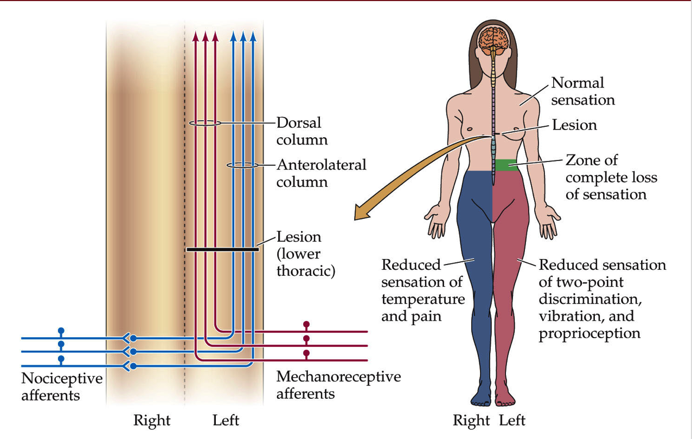
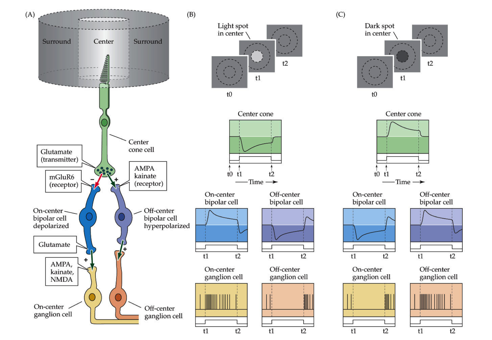
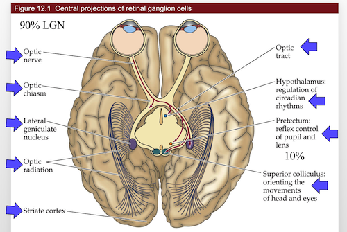
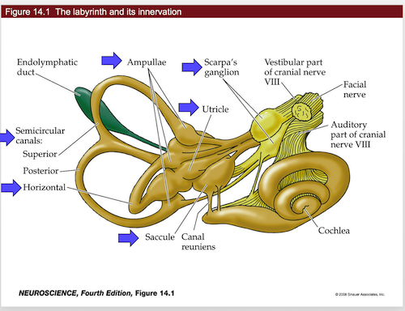
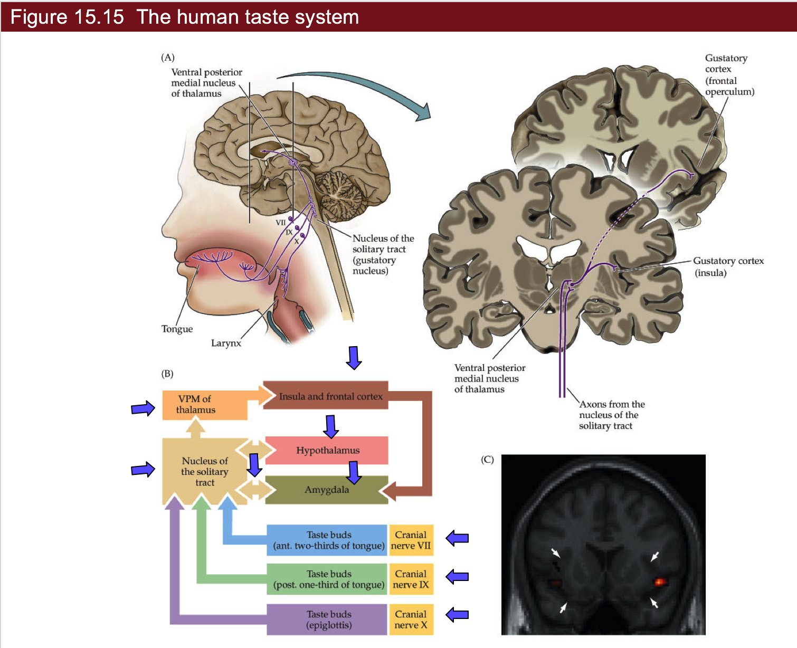

genomics
view markdownnotes from Neuroscience, 5th edition + Intro to neurobiology course at UVA
9- somatosensory
cheat sheet
- vocab
- nerve - bundle of axons
- tract - bundle of axons in CNS
- nucleus - bundle of neurons related to some function
- midline - center of nervous system
- brain tends to be lateralized - one side is given control
- ex. speak almost exclusively from left side of brain
- information processing
- feedback (gain)
- almost always with glutamatergic / GABA
- feedforward - anticipation
- estimate things before they happen
- adjust your behavior in advance of the world (ex. lean before you hit a table)
- center-surround inhibition (spatial gain)
- if you touch yourself, brain enhances sensitivity of one point by suppressing information from around it
- feedback (gain)
sensory system overview
- we have dorsal root ganglia (DRG) on spinal cord
- axon goes to CNS
- dendrites go everywhere
- pseudounipolar - born polar but become uni-polar
- dendrite goes straight into axon with cell body off to the side
- do very little processing
- dorsal horn - top layer that controls sensory information
- in the brain stem, these are called cranial ganglia
- special one is trigeminal ganglia (sensory receptors for face)
- oxytocin important clinically
- Trp channels - connected mechanically into membrane
- dermatomes
- map of sensory parts to brain
- segments of spinal cord correspond to stripes across your body
- brain to feet: cervical, thoracic, lumbar, sacral
- shingles - virus where you get stripes of sores - single DRG
- pops out the skin on the dendrite of one DRG
- peripheral damage won’t give you stripes of pain
- feeling resolution - depends on density of neurons innervating skin
- more neurons - small receptive fields
- two-point discrimination test - poke you at different points and see if you can tell if the points are different
- higher discrimination is better
- discrimination is different that sensitivity (like how it hurts when wounded)
4 neuron classes
- they have certain structures that tune them into certain kinds of vibrations
- Proprioception
- muscle spindles - on every neuron - fastest
- measures stretch on every muscles
- lets you know where your arm is
- Golgi tendon organ
- measures tension on tendon
- safety switches - numb your body if you’re over-stressing something (make you let go of hanging on cliff)
- muscle spindles - on every neuron - fastest
- Ia II - touch neurons
- superficial - most sensitive
- Merkel: hi-res, slow adapt
- Meissner: hi-res, fast adapt
- deeper - sense vibrations, pressure 3. Ruffini: low-res, slow adapt 4. Pacinian: low-res, fast adapt
- these are in order of depth
- diabetes - tissue loss and pain / numbness are lost
- superficial - most sensitive
- Adelta - fast pain
- C fibers - pain, temperature, itch
- very slow, stay on
- no myelination - Pruritus - newly discovered set of sensory neurons - between pain/touch - itch neurons - new in mice: massage neurons
- can only fire by stimulating in certain pattern
- goes to emotion center not knowledge - pleasure
- Proprioception
- speed proportional to diameter, myelination
- adaptation
- some adapt slowly (you keep feeling something)
- some adapt quickly (stop feeling)
- if you move finger slightly, start firing again when changed
- better if you feel cockroach that starts moving
pathways
- upper-body
- S1 cortex - primary somatic sensory cortex - this is the knowledge of where was touched
- VPL - everything accumulates here in the thalamus then goes to
- Cuneate nucleus - everything goes into this
- lower-body (trunk down)
- everything in the lower body goes to Gracile nucleus - in brain stem
- special case - sensory for face
- trigeminal ganglion connects into vpm (thalamus) then goes into S1 cortex
- proprioceptive pathways
- starts in lower body
- axons split - half go up to Clark’s nucleus
- half go back into muscles
- Clark’s nucleus goes straight into cerebellum
- axons split - half go up to Clark’s nucleus
- starts in upper body - goes straight into cerebellum
- thus cerebellum have map of where / how tense muscles are
- starts in lower body
representation
- cortex - this is where understanding is
- dedicates area based on how many neurons coming in
- lips / hands have more area
- S1 - primary somatosensory cortex
- most body parts
- neurons from functionally distinct columns
- cortex assigns space based on how much info comes in
- after amputation and time, map grows into lost space
- map is different when different stimuli are given to fingers
- S2 - secondary somatosensory cortex
- processes and codes information from S1
- throat, tongue, teeth, jaw, gum
- dedicates area based on how many neurons coming in
pathway
- mechanosensory
- DRG
- Cuneate, Gracile
- VPL
- S1
- face mechanosensory
- trigeminal ganglion
- principal nucleus of trigeminal complex
- vpm
- S1
- proprioception
- lower body
- muscle spindles split
- half go to motor neurons
- other half go to Clark’s nucleus
- clark’s nucleus -> cerebellum
- upper body - straight to the cerebellum
- lower body
10 - nociception
review
- chronic pain is very import clinically
- cortex - lets you know if you are sensing something
- loss-of-function lesion - piece of cortex is lost - lose awareness
- can come from stroke, migraine-aura
- gain-of-function lesion = excitatory lesion - like epilepsy
- cortex comes on when it shouldn’t
- increased awareness
- can come from stroke / migraine
- loss-of-function lesion - piece of cortex is lost - lose awareness
- “sixth sense” - measuring stretch of all your muscles in cerebellum
- nociception = pain
- has nociceptors - neurons that do nociception
- thermoceptors - neurons that sense temperature
- two classes of linking receptors
- Adelta fibers - fast pain
- C fibers - slow and chronic
- Trp channels - mechanically or thermally gated
- let Na+ in
- trpV heat - binds capsaicin
- in the class of vanilloids
- birds not capsaicin sensitive
- trpM cold - binds menthol
- adapts in minutes - stop feeling cold after a while
- synapses of nociceptors go to dorsal horn of drg
- nociceptor goes contralateral (must cross midline) - if you cut left side of spinal chord, lose - mechanoception (ipsilateral) from left and nociception (contralateral) from right
- mechanoreceptors, by contrast, send axon up the spinal cord
- dorsal horn has laminal structure (has layers)
- know where pain is
- somatosensory cortex
- care about pain
- insular cortex - emotional part of brain
- whether or not you care about pain
- pairs up with other senses
- insular cortex - emotional part of brain
- can have both loss-of-function and gain-of-function lesions in both places
- referred pain map - map that refers to a specific problem (ex. esophagus)
- visceral pain - don’t know where the pain is
- hyperalgesia - increased pain sensitivity
- pain sensing neurons are hyperactive because of inflammation
- pain sensing neuron releases substance P into Mast cell or neutrophil which releases histamine which strengthens receptor
- prostaglandins activate nococeptors
- allodynia - when mechanosensation hurts - not understood
- turning off pain - add serotonin
- exercise
- lack of serotonin ~ mood disorders
- central sensitization: allodynia
- these mechanisms work through introception
- senses chemical imbalances
- phantom limbs and phantom pain - if you lose a limb and still feel pain
- mechanoreceptors inhibit nociceptors
pathway
- nociception

- same as mechanosensory except goes all the way to thalamus
- doesn’t stop in brainstem
- crosses the midline after first synapse
- visceral pain
- axons mainline straight up, go through vpl, go straight to insular cortex
11 - vision (eye)
- most of visual system is to read faces
- eye
- aqueous humor
- posterior chamber
- lens
- ciliary muscles
- retina
- fovea
- optic disk
- optic nerve and retinal vessels
- to see far, stretch lens = accomodation
- retina - rods and cones are at back
- cones - color
- retinal ganglion cells sends down signal
- 12 days to turnover whole photoreceptor disks into PE (pigment epithelium)
- PE is what the rods / cones are in
- PE contains optic disks containing rhodopsin protein that is sensitive to light that break off of rods / cones
- light leads to inhibition
- melanopsin - receptor for blue light
circuits
- accomodation - stretching lens uncrosses lines
- function photoreceptor
- usually cGMP is letting in Na/Ca
- Ca provides negative feedback here
- when light hits, retinal inside rohodopsin activates phosphodiesterase - breaks down cGMP so channel closes and they aren’t let in
- usually cGMP is letting in Na/Ca
- light on middle
- depolarizes cone
- excites oncenter
- inhibits offcenter
- these adjust quickly
- horizontal cells - takes positive input from photoreceptor and inhibits it back
- inhibits horizontal cells else around it - creates contrast
- have these for each color
pathway

- rods / cones (2). horizontal cells - regulate gain control, how fast adapts, contrast adaptation
- bipolar cells (4). amacrine cells - processing of movements
- retinal ganglion cells
- go into thalamus then to cortex (6). small amount go into brain stem and control mood / circadian rhythms
12 - central visual system
- cortex is a pizza box
- has columns
- autophagy - process by which cells eat parts of themselves
- nobel 2016
- cones - color
- 12 day cycle for processing optic disks
- photoreceptors have cyclic G-activated channel
- light shuts down photoreceptors
- cell decreases in activity
- very roughly - each cone connects to cone bipolar cell
- this gets represented by one column in the cortex
- 15-30 rods connect to 1 rod bipolar cells
- cortex has 6 layers
- each has tons of neurons, mostly pyramidal neurons
- column is a section through the 6 layers - all does about the same thing
- orientation columns responds to specific x,y
- has subregions that respond to specific orientations
- ocular dominance column - both eyes for same coordinate go to same spot
- dominated by one eye
- distance
- far cells
- tuned cells
- near cells
- V4 in temporal lobe - object recognition
pathways

- overall
- V1
- V2
- V4 or MT
- central projections
- retinal ganglions
- all go through optic stuff
13 - auditory system
- ear parts
- outer
- middle
- tympanic membrane
- inner
- cochlea - senses the sound
- oval window
- round window - not understood
- conductive hearing loss - in the outer/middle ear
- sensorineural hearing loss - in the cochlea
- can’t be fixed with hearing aids
- humans
- 2-5kHz ~= human speech (can sometimes hear more)
- 30-100x boost for tympanic membrane
- this differs between people
- 200x focus onto oval window
- cochlea
- 4 layers
- inner hair cells - what you hear with
- outer hair cells - generate sound
- generates noise at every frequency except one you want to hear
- otoacoustical emmision - low buzz that is produced
- tenitis - ringing in the ears
- can be internal
- can be peripheral - generated by otoacoustical emmision
- high frequencies right next to cochlea
- low frequencies on distal tip
- human high frequency cells die with age
- 4 layers
- hair cells
- bundle of cilia
- have an orientation
- kinocilium is the tallest
- tall ones are in the back
- dying hair cells - can’t be replaced
-
- loud sounds
- certain antibiotics
- auditory pathwayz
- MSO - medial superior olive - decides where the sounds is coming from
- takes input from right / left ear, decides which came in first
- medial geniculate complex of the thalamus
- MSO - medial superior olive - decides where the sounds is coming from
- brain shape
- folds are pretty random
- phrenology - shape of skull was based on brain
- thought it could determine personality
- false
- Hsechl’s Gyrus folding pattern is not random
- argument that if you have one, you are more musical
- any sounds is made up of a bunch of frequencies
circuits
- K depolarizes hair cells, lets in Ca, releases vesicles
14 - vestibular system
- very related to cochlea
- same hair cells
- differences

- vestibular system doesn’t use cortex (you don’t think about it)
- goes right into spinal chord
- controls eye movements
- one of the fastest circuits in the brain
- clinically important
- you have to be able to have your balance
- each column is computational unit of the cortex
- ocular dominance column
- one for each eye
- labyrinth and its innervation
- semicircular canals
- can only measure one axis of rotation
- remember horizontal canal - measures turning head left to right
- this measures acceleration
- like a hoola hoop filled with glitter
- has ampulla at one place in the hoop
- cupula - sits over the ampulla’s hair cells
- if the “glitter” hits the cupula, it will bend the hair cells
- if you keep spinning, fluid starts moving and you stop detecting movement
- this means the canals adapt mechanically
- if you stop spinning, fluid keeps moving and system thinks you’re spinning the other way
- right horizontal canal activated by turn to the right
- same for left
- scarpa’s ganglion - has hair cells inside
- sends axons into vestibular nuclei
- lots of fluid (high in K+)
- macula - place where all the hair cells are
- Ampullae - at base of canals
- hair cells all in the same direction
- utricle and saccule - measure head tilt
- hair cells in multiple orientations
- these contain otoconia
- these are little crystals that move with gravity
- measure acceleration and tilt
- Ampullae - at base of canals
- semicircular canals
- tilts do not adapt - they keep firing while you’re leaned back
- they basically report tilt / position at all times
- tiplink - connect cilia together for hair cells
- when they move, tiplink move, pull on ion channels
- motor on connected hair cell moves up and down to generate correct amount of tension
- motor uses myosin and actin
- harming these proteins can cause deafness
- both eyes must always be looking in the same direction
- also must be sitting over image for a while
- ipsilateral - same side
- contralateral - different side
- vestibular ocular reflex VOR - turn your head to the right, eyes move left
- doesn’t require cortex
- only have to learn excitatory
15 - chemical senses

- cAMP is used by GPCR